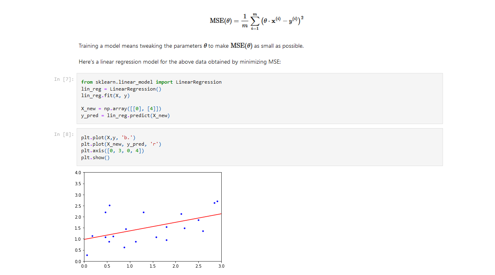
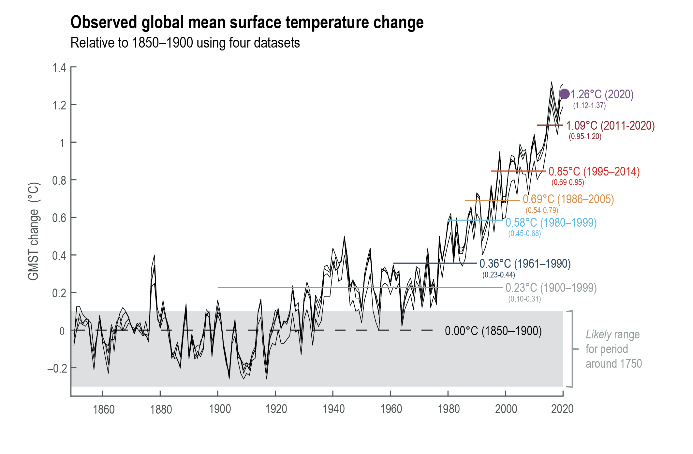
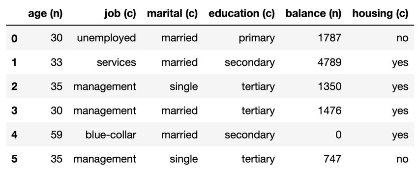
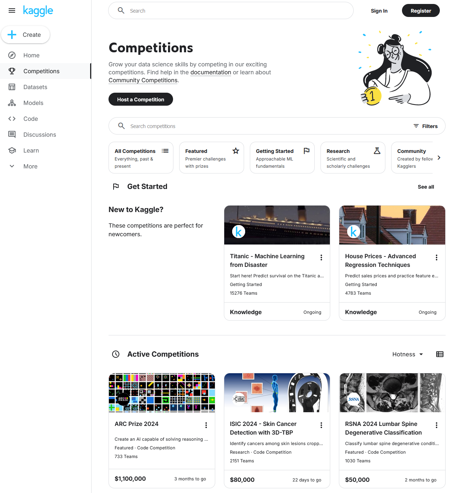
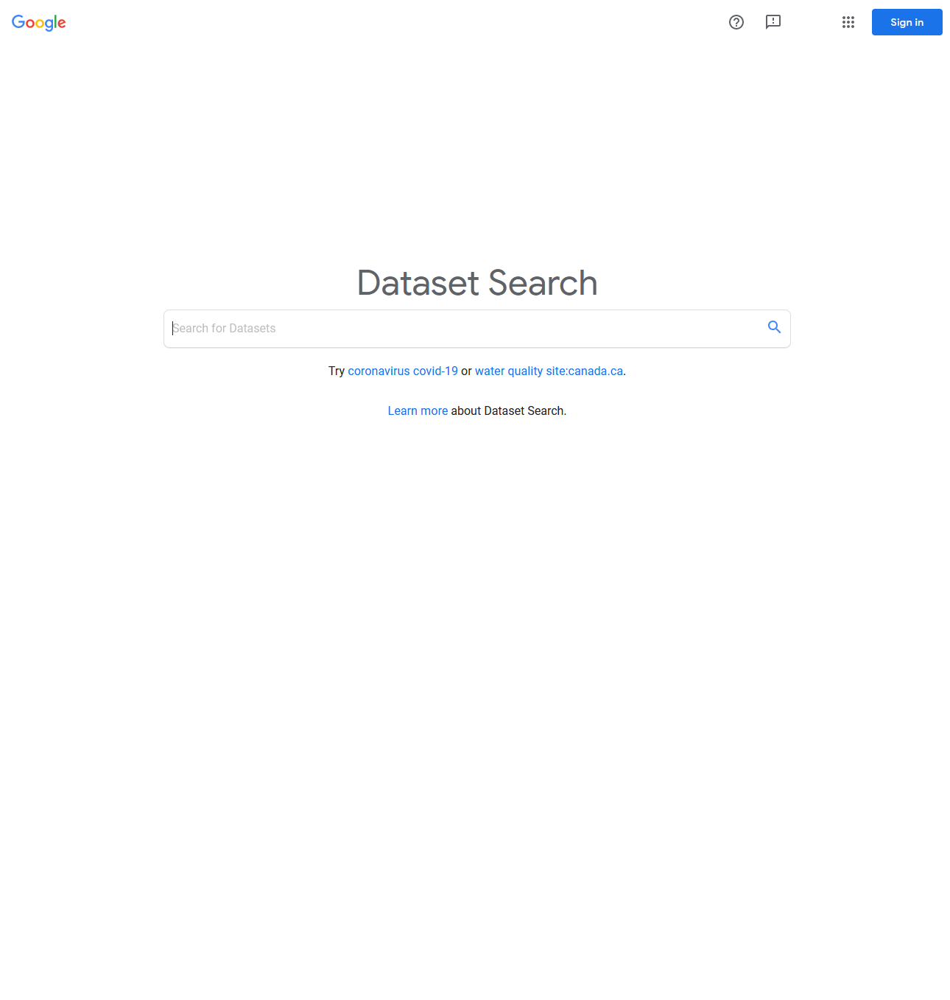
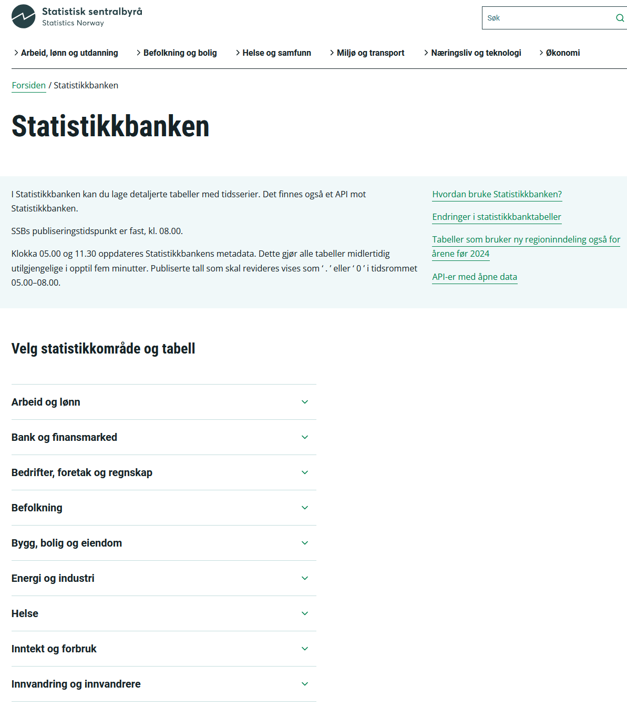
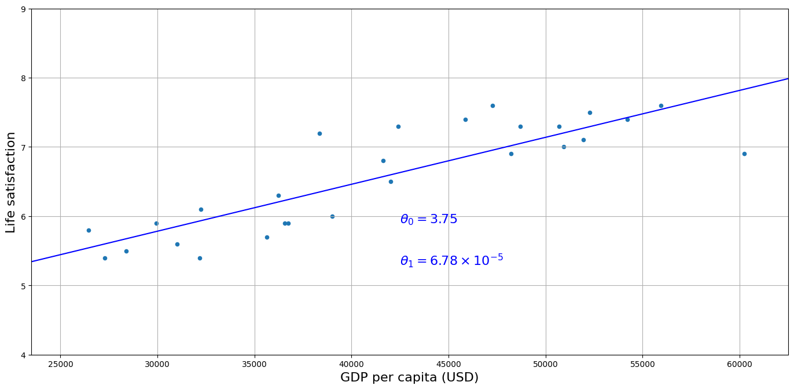
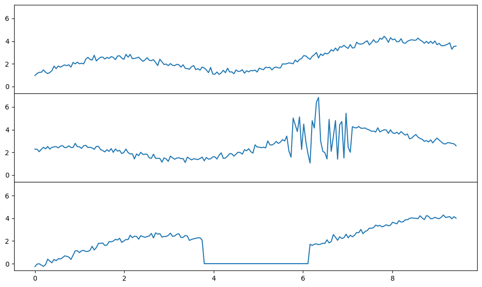
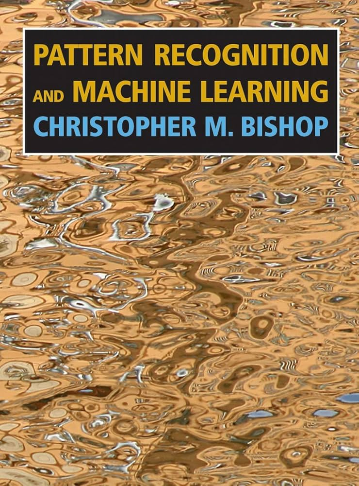
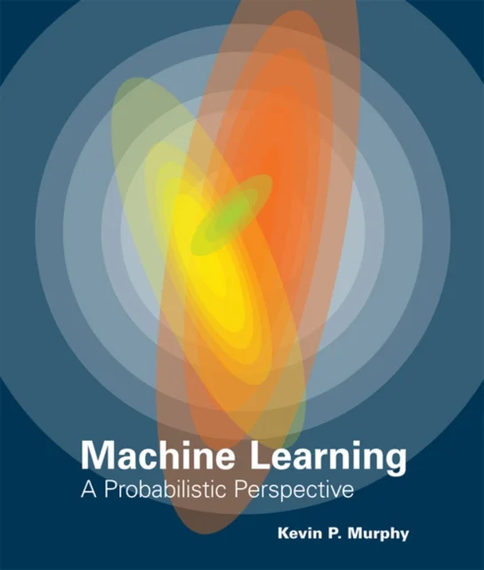

DAT158: Machine Learning Engineering and Advanced Algorithms
Module 1 - Introduction to Machine Learning
Programming
The machine learning part of the course is based on the python programming language
Free resources for learning python are posted on Canvas, such as
Two options for running python:
- Use cloud services, such as
- Install locally

Notebooks
Exercises are given in form of Jupyter notebooks
- Can mix code, results, and notes (
markdownandTeX) in the same file - These are partially filled, and you fill the rest
- Can be run locally or in cloud services



Machine learning

ML vs AI

Different types of machine learning
Supervised learning:
Each datapoint is assigned to a label, which the model tries to predict.
Unsupervised learning:
Datapoints are unlabelled, but the model tries to group similar ones, or otherwise learn a pattern.
Reinforcement learning:
The model (aka agent) interacts with an environment, and receives rewards or penalties depending on its actions

(Some) types of data






Sources of data
Openly available datasets well suited for machine learning:
(More listed in Chap 2 in the textbook)






Data challenges
- Too little data available:
Can lead to overfitting: the model gives perfect predictions on known data, but does not generalise to new data
- Unrepresentative data:
New data does not look like known data


- Poor quality:
Noise, typing errors, missing entries, rounding errors, …

- Irrelevant data:
Little or no correlation with the observable we want to predict
Machine learning engineering
theoretical
applied
Machine learning models
 
Machine learning engineering
Data and society